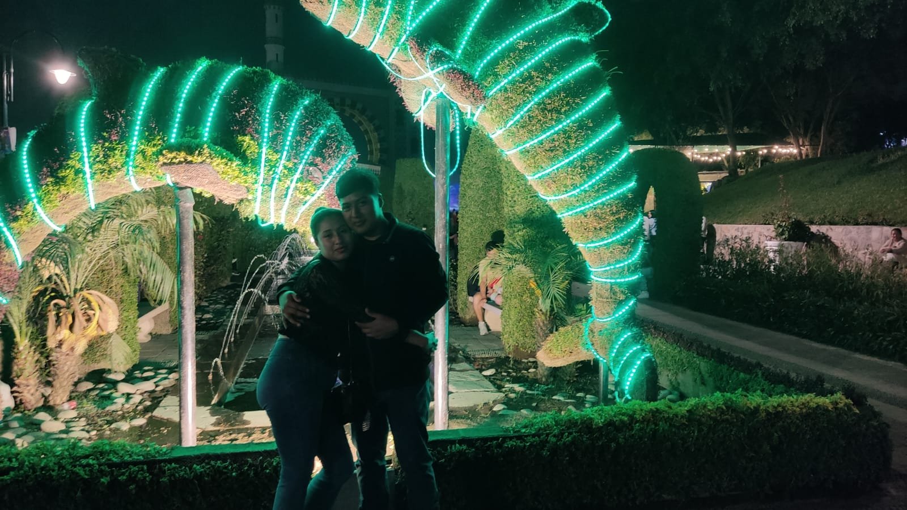

Amarte ha sido la experiencia más hermosa de mi vida y también lo más doloroso que me ha sucedido. Porque amar también es aprender a soltar, y esa lección hoy me está matando. Pensé que tú y yo seríamos para siempre, que el amor que construimos sería suficiente para superar cualquier tormenta. Contigo conocí lo que significa realmente entregarse y soñar. Cada risa, cada abrazo, cada mirada que compartimos, se queda tatuada en mi alma. Nadie podrá ocupar el lugar que tú tienes dentro de mí, porque tú no eres un capítulo: eres el libro entero de mis más bellas memorias. Te pido perdón por no haber sido suficiente, por cada vez que fallé en sostenerte como merecías. Pero también te agradezco, desde lo más profundo de mi ser. Gracias por cada instante que me regalaste, por cada mirada, cada sonrisa, cada segundo en el que fui feliz a tu lado. Quiero que sepas que mi amor por ti nunca se extinguirá. Llevaré cada pedacito de lo que fuimos con orgullo, como un tesoro que nadie podrá arrebatarme. Deseo que encuentres la felicidad que mereces, incluso si no es conmigo. Porque al final, todo lo que quiero para ti es que seas feliz, donde sea, con quien sea, y como sea. Llevaré tu recuerdo conmigo, como un faro que siempre iluminará mi oscuridad. Y aunque nuestros caminos ahora se separen, en algún rincón del universo, espero que nuestras almas vuelvan a encontrarse. Te dejo ir no porque no te ame, sino porque te amo demasiado como para ser egoísta. y aunque eso me destroza, no quiero ser quien impida que encuentres tu felicidad. Gracias por ser mi amor, mi refugio, mi persona. Gracias por mostrarme un amor tan profundo que me transformó, siempre habrá un rincón de mí que te ame en silencio, y no te preocupes cumpliré mi promesa de siempre sonreír no importa en los peores momentos. Por siempre tuyo
El corazón de Cesar Augusto C.C. que te amará eternamente
